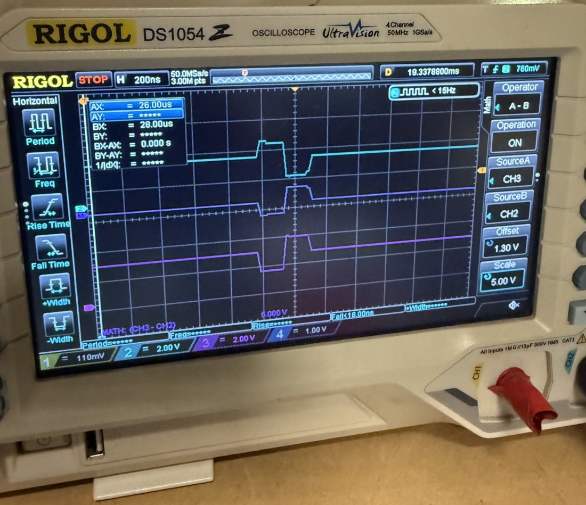
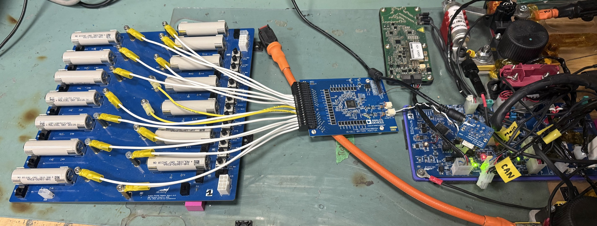

ADBMS Driver Development
This driver runs the Analog Devices ADBMS6830B battery-monitoring ICs that monitor UBC Formula Electric’s 600 V pack. The main BMS board — an STM32H7 running FreeRTOS — communicates with ten segments over an isoSPI daisy chain, with every packet PEC-validated. Each segment monitors 14 cells and 14 thermistors; on top of reading them, the driver runs passive cell balancing and raises safety alerts. The full pack state is then transmitted to the rest of the car over FDCAN.
Loading the 3D board…
How it works
The driver is split into two layers: a low-level io/adbms layer that encodes and decodes data using the ADBMS command protocol, and an app/segments layer that turns the register reads into pack-level quantities and behaviour.
- isoSPI daisy chain. The host STM32H7 talks SPI to a transceiver that converts to isoSPI, which hops across the high-voltage segments. Every payload is broadcast down the chain and shifted back up, so all ten segments are addressed in a single command. The link is also reversible: the communication can be driven from either end, so if it breaks partway, the segments past the break are still reachable from the other side.
- PEC-validated transactions. Each command and data block carries a packet error code — a 15-bit PEC on commands and a 10-bit PEC on data. The io layer generates it on write and checks it on read, so any corrupted frame on the noisy HV bus is caught. It also tracks the ADBMS command counter returned in each reply, so a missed or dropped command is flagged.
- Cell & thermistor acquisition. The driver starts the ADBMS’s on-chip ADC conversions, waits the part’s conversion time, then reads back the cell-voltage and auxiliary (thermistor) register groups and converts the raw counts to volts and degrees Celsius.
- Open-wire detection. By toggling the ADBMS pull-up/pull-down current sources and comparing readings, the driver detects broken connections to any cell tap or thermistor.
- Passive balancing. Per-cell discharge switches are driven on a settle/balance timer to bleed down the highest cells and keep the segment in balance.
- Thread-safe by design. Acquisition runs in asynchronous FreeRTOS tasks; the shared SPI bus and the latest pack values are guarded by semaphores/mutexes so the broadcast, control, and safety tasks never collide. The SPI transfers themselves run over DMA, so the CPU isn’t blocked sending bytes for each transaction.
- Alerts & fault handling. The driver raises the faults required by the FSAE rules — cell open-wire, cell over- and under-voltage, and thermistor over-temperature. Each one is handled to safely fault the car and open the HV shutdown loop.
On the bench
I brought the driver up incrementally, starting on a pseudo-segment — a harness that exposes the same voltage taps as a real segment, but wired 1P instead of the production 4P configuration. That gave me a safe target to develop against before testing it on a full pack.
Loading the 3D board…
The first milestone was the isoSPI transport itself. Using the pseudo-segment, I verified the ordering of the packets leaving the driver on a Saleae logic analyzer, checking that every command and its data matched the format specified in the datasheet.


With the framing validated, I moved on to the driver’s functionality — building out the acquisition, balancing, and fault logic and testing it against an actual module board rather than the eval board, still on the pseudo-segment.
Once every function was working in isolation, the last step was to move onto a real segment and daisy-chain it with several others, bringing up full-pack communication and reading cell voltages, cell temperatures, open-wire (OWC) statuses, and other diagnostic health checks across the whole string.
What I did
I designed and architected this driver end to end as part of the BMS firmware team. On the io side that meant getting the isoSPI transactions and PEC generation/checking working reliably, and reading the ADBMS cell-voltage, auxiliary, and configuration registers. On the app side it meant turning those raw reads into the data the rest of the car depends on — min/max cell statistics, health checks, balancing decisions, and alert thresholds — and broadcasting all of it over FDCAN.
Most of the real work was hardware bring-up and debugging. The first major hurdle was getting PEC10 and PEC15 validating correctly for every transaction across the bus. Getting that layer right took time; I debugged it using memory breakpoints and logic-analyzer probes on the SPI bus until every packet checked out.
From there, a lot of the effort went into the boards themselves: confirming components were soldered correctly and, when they weren’t, isolating which had failed. I worked backwards from the functionality that was working, and leaned on the board’s common failure points to narrow down each hardware fault across the 15+ boards I brought up.
Finally, once the driver was talking to the full pack, I ran into timing issues in the polling loop. Chasing those down led me deep into the ADBMS’s ADC conversion cycle — understanding exactly how long each measurement takes so the firmware polls in step with the hardware rather than ahead of it.
Browse the source
The code is available at github.com/UBCFormulaElectric/Consolidated-Firmware.